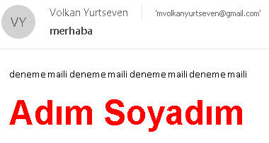
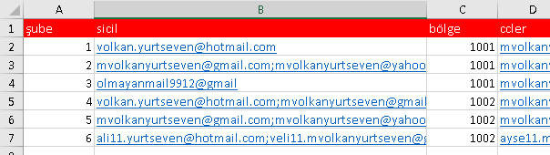
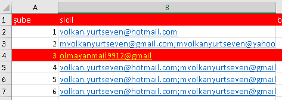

| VBAMakro |
Diğer Uygulamalarla iletişim |
1 |
Outlook Programlama
Giriş
Birçoğunuzun bildiği veya tahmin ettiği üzere Microsoft Office ürünlerinin hepsinin birbirleriyle konuşabilmesi diye birşey
sözkonusu. Bunu günlük hayatta Excel'deki bir grafiği veya başka bir
nesneyi Word'e veya PowerPointe kopyalarken görebiliyoruz.
Bu ilişki kod tarafında da kurulabiliyor. Bunun için de hangi
uygulamadaysanız, iletişim kurmak istediğiniz diğer uygulamadan bir
Application nesnesi yaratma
yoluyla ilerlersiniz. Bunun için iki yöntem var. Ya ilgili uygulamanın
kütüphanesini(library) VBE'de Tools>Reference menüsünden
eklemek ve bundan bir nese yaratmak, ki buna Early Binding denir, veya
Object türünde bir değişken yaratıp Late Binding yöntemiyle ilgili atamayı
yapmak.
Bu şekilde ilgili uygulamanın nesne modeline erişim sağlamış oluruz.
Bu arada, bu konuyla ilgili örnek dosyayı indirmek isterseniz
buraya tıklayın.
Kütüphane ekleme
Biz burada ağırlıklı olarak Early Binding metodunu göreceğiz, bir iki
yerde ise Late Binding örneği yapacağız. Tabiki iki tür yöntemin de kendine
göre avantajları var, bunları ilgili linklerde bulabilirsiniz ama ben
intellisense özelliğinden faydalanmak istediğim için genelde Early Bindingi tercih
ediyorum.
Kütüphaneyi henüz eklememişken aşağıdaki gibi bir kod yazıp intellisensin bana ne
gösterdiğine(daha doğrusu ne göstermediğine) bakalım.
Şimdi referansımızı ekleyelim.
Siz tabi kendinizde hangi Office versiyonu varsa onu eklersiniz. Ben şuan
Office 2016 ile çalışıyorum, eğer sizde 2016'dan farklı bir Outlook versiyonu
varsa ve bu sayfadaki örnek dosyaya bakıyorsanız sizde MISSING olarak görünür, bunu kaldırıp doğru versiyonu
ekediğinizden emin olun. Eğer sıfırdan oluşturuyorsanız zaten başka bir
library dosyası göreceksiniz.
Ve intellisense'i tekrar kontrol edelim. Gördüğünüz gibi şimdi Outlook
geliyor.
Bu arada Outlook nesne modeliyle ilgili yaygın bir notasyon vardır.
Outlook'un kendisini atayacağımız değişken adına genelde oApp/outApp, mail
değişkenine ise oMail/outMail adı verilir. Ben de bu geleneği sürdüreceğim.
Mail Gönderme
Bu kısımda önce basit bir mail gönderimi yapacağız, sonra da bir liste
üzerinden çoklu mail gönderimi yapacağız, aşağıda ayrı bir kısım olarak
oluşturduğum Otomatik Mail Gönderim formunda ise kompleks bir mail gönderim
uygulaması yazacağız.
Nesneleri yaratmak
Mail göndermede ilk adım bir Outlook nesnesini bir de mail nesnesini
temsil eden değişkenleri yaratmaktır. Bunu aşağıdaki kodla
yapıyoruz.
Dim oApp As Outlook.Application 'Outlook'un kendisi
Dim oMail As Outlook.MailItem 'mail nesnesi
Daha sonra bu değişkenlere değerlerini atıyoruz. Akabinde mailin temel
özelliklerini (konusu, alıcısı, gövde metni) tanımlıyoruz, ancak maili
göndermiyoruz, sadece gösteriyoruz(Display
metodu). Maili göndermeden sadece gösterme
eylemini uygulamak, test yapma konusunda bize büyük kolaylıklar sağlar. Bu
metodu sık sık kullanmanızı tavsiye ederim.
Sub mailGöster()
Dim oApp As Outlook.Application
Dim oMail As Outlook.MailItem
Set oApp = New Outlook.Application
Set oMail = oApp.CreateItem(olMailItem)
With oMail
.Subject = "bu bir deneme mailidir"
.To = "volkan.yurtseven@hotmail.com"
.Body = "deneme"
.Display
End With
End Sub
Outlook nesnesini taşıyacak değişkenle değerini atama işini iki ayrı
satırda yaptık ancak daha önceki bölümlerden gördüğünüz üzere bunu tek
satırda da yapabilirdik: Dim oApp As New Outlook.Application
Mail nesnesini yaratma işini ise Application nesnesinin
CreateItem metodu ile yaptık, parametre
olarak da intellisenseden açılan olMailItem değerini verdik. Bunların
numerik değerleri de var, ancak Early Binding'in nimetlerinden faydalanalım
diyorum. Yine de sıklıkla farklı kaynaklarda görebilirsiniz ve belki de
kullanmak istersiniz diye sadece mailitem'ın nümerik değerini bilmeniz de
faydalı olacaktır; o da 0'dır.
Late Bindigle gönderim şekli ise şöyle olurdu;
Sub lateBindingMail()
Dim oApp As Object
Dim oMail As Object
Set oApp = CreateObject("Outlook.Application")
Set oMail = oApp.CreateItem(olMailItem)
With oMail
.Subject = "bu bir deneme mailidir"
.To = "volkan.yurtseven@hotmail.com"
.Body = "deneme"
.Display
End With
End Sub
Outlook nesnesini Late Binding ile elde etmenin bir yolu da
GetObject metodunu kullanmaktır.
O anda çalışan bir Outlook nesnesi varsa, yenisini yaratmamak adına bu
bellekteki Outlook nesnesine başvurulur. Eğer yoksa, hata alınır, hata
olmaması adına öncesine On Error Resume Next denir, hata kodu kontrol
edilir, hata varsa CreateObjectle nesne yaratılır.
On Error Resume Next
Set oApp = GetObject(, "Outlook.Application")
If Err.Number <> 0 Then '0 demek hata yok demek
Set oApp = CreateObject("Outlook.Application")
End If
Tek mail göndermek
Yukarıda gördüğümüz üzere, mail nesnesini yarattıktan sonra olmazsa
olmazımız mailin alıcısını tespit etmektir. Bunu genelde
To özelliği ile yaparız. Başka bir
alternatif daha var, buna sonra değineceğiz.
Aşağıdaki örnekte, bir sayfada çeşitli NamedRange'ler oluşturdum, ve mail
gödnerme işini de bir butona atadım. Maili gönderme işini
Send metodu ile yapıyoruz.
Sub Button1_Click()
Dim oApp As Outlook.Application
Dim oMail As Outlook.MailItem
Set oApp = New Outlook.Application
Set oMail = oApp.CreateItem(olMailItem)
With oMail
.Subject = Range("mailSubj")
.To = Range("mailTo")
.Body = Range("mailBody")
.Send
End With
End Sub
Çoklu(Batch) mail göndermek
Öncelikle şunu belirtmek isterim ki, çok sayıda alıcıya mail göndermekle
kastımız, alıcıların birbirlerini görmeden mail göndermektir ve bunun
birden çok yolu vardır. Bunlara hızlıca bir bakalım.
- Alıcıları bcc'ye koyarak klasik yolla mail göndermek:
Bu yolla parametrik bilgi geçilemez. Mesela kişiye özel hitap edilemez.
- Word Mailmerge: Kişiye özel mesajlar vermek için
Word'ün MaiMerge özelliğin kullanabilirsiniz. Kişiye ismiyle hatta
bay/bayan/doktor gibi çeşitli hitap şekilleriyle hitap edebileceğiniz
gibi, onlara çeşitli rakamsal veya metinsel bilgileri kendilerine özel
olarak iletebilirsiniz. Bununla ilgili olarak internette bol miktarda
makale ve video bulunmakta. Hiç makro bilgisi gerektirmediği için de
herkesin kullanabileceği bir özellik olmaktadır.
- VBA: Mail Merge'le yapılamayan kişiye özel ek,
kişiye özel cc/bcc belirleme, koşullu konu başlığı veya gövde metni
belirleme gibi daha komplex işleri VBA ile yapabilirsiniz.
- Diğer Programatik yaklaşımlar: Tüm diğer
programlama dilleriyle bunu yapabilirsiniz, veya bu konuda hazır
yazılmış programları veya benim Excelent isimli Add-in'im gibi paketleri
kullanabilirsiniz.
Biz doğal olarak burada sadece VBA yöntemine değiniyor olacağız.
Bunun için aşağıdaki gibi bir listemiz olsun.
Mesaj kısmını, gördüğünüz gibi parametrik oluşturdum. Formülün sonundaki
CHAR(13) ifadesi Enter işareti anlamına gelir, yani takip eden metin bir alt
satırdan devam eder. (Bazı kaynaklarda CHAR(10) da görebilirsiniz, Excel'de
ikisi de aynı sonucu üretir)
Sırayla tüm alıcılara mail atılması gerketiği için döngüsel bir kod
yazmamız gerekiyor. Şimdi bu kodumuzu oluşturup bir düğmeye atayalım.
Sub çoklumail_Button1_Click()
Dim oApp As Outlook.Application
Dim oMail As Outlook.MailItem
Dim alıcılar As Range, a As Range
Set oApp = New Outlook.Application
Set alıcılar = Range(Range("A2"), Range("A2").End(xlDown))
For Each a In alıcılar
Set oMail = oApp.CreateItem(olMailItem)
With oMail
.Subject = "Doğum günü"
.To = a.Value
.Body = a.Offset(0, 3).Value & "Doğum gününüz kutlar, ailenizle birlikte mutlu yıllar dilerim"
.Body = .Body & vbCrLf & "Gönderenin adı soyadı"
.Send
End With
Set oMail = Nothing
Next a
Set oApp = Nothing
End Sub
Şimdi farkettiyseniz, bu sefer mail nesnesini For Each döngüsü içine aldık.
Zira her gönderim sonnunda ilgili nesneyi Nothing ataması yaparak yok etmemiz
gerekiyor. Yokettiğimiz nesneyi ise tekrar kullanamayacağımız için tekrar
yaratıyoruz.
Aslında yok edilmesi gereken bir nesne daha var, o da oApp nesnesi, onu da
programın en sonunda yok ediyoruz.
Evet sonuçta Sent Items'a baktığımızda aşağıdaki gibi kişiye özel maillerin
gittiğini topluca görebilirsiniz.
Giden maillerden birinin içeriği de aşağıdaki gibidir.
Merhaba satırından
sonra bir boşluk daha olsun isterseniz formülün içine iki tane CHAR(13)
yazmanız gerkeir.
Maile canlılık katmak
HTMLBody
Gönderdiğiniz mailde çeşitli yerleri renkli, koyu, farklı yazı tipinde v.s
göstermek isterseniz mail nesnesinin Body
özelliğini değil
HTMLBody özelliğini
kullanmanız gerekir.
Bunun için biraz HTML bilmenizde fayda var. Aşağıdaki örnekte renklendirme
ve kalınlaştırma örneğini görebilirsiniz.
Sub Button2_Click()
Dim oApp As Outlook.Application
Dim oMail As Outlook.MailItem
Set oApp = New Outlook.Application
Set oMail = oApp.CreateItem(olMailItem)
imza = "<H3><B><font size=""10"" face=""Arial"" color=""red"">Adım Soyadım</font></B></H3>"
With oMail
.Subject = Range("mailSubj")
.To = Range("mailTo")
.HTMLBody = Range("mailBody")
.HTMLBody = .HTMLBody & imza
.Send
End With
End Sub
Burada, H3, B font gibi ifadelere Tag denir. Size, face, color gibi
ifadelere ise özellik denir. Bunlardan <H3>, özel bir başlık türüdür. Ben de
mesela
bu sayfayı hazırlarken az yukardaki "Maile canlılık katmak" başlığında H3
tag'ini kullanıyorum. <B>, ilgili metni kalın yapar. Bu etiketler </H3>ve
</B> etiketleriyle kapatılmak zorundadırlar.
Diğer kullanmak istediğiniz Tag'ler için bir html eğitim sayfasına bakmanızı
tavsiye ederim.
Aşağıda giden mailimiz görünmektedir.

Resim kullanmak
Mail gövdesine resim dahil etmek için yine HTMLBody özelliğini kullanıyoruz.
Bunun için <img> tag'i kullanılır.
Yukarıdaki kodda Send komutundan hemen önceki satıra şunu ekleyelim
.HTMLBody = .HTMLBody & "<img src ='C:\....\images\Excelent.jpg'>"
Giden mail de şöyle görünür:
Bu arada farkettiyseniz bu sefer img tag'inin özelliklerini kesme işareti
arasın aldım. Bir üstteki örnekte ise iki tane çift tırnak içine almıştım.
İki yöntem de özdeştir, tek kesme işareti pratik olmakla birlikte iki tane
çift tırnak görürseniz de şaşırmayın.
Recipients collectionı ve Recipient nesnesi
Bazen mail göndermeye çalıştığımız mail adresi artık geçerli olmayabilir.
Geçelir olmaktan kastım, ilgili adresin Adress Book içinde kayıtlı
olmasıdır.
Mesela bu bir personel listesiyse, personellerden bazısı kurumdan ayrılmış olabilir.
Böyle durumlarda, mail adresinin geçerli olup olmadığını kontrol etmemiz
gerekebilir. Bunu da Recipient nesnesinin
Resolve metodu ile yapıyoruz. Bu işlem,
aslında Ribbonda'dan Check Names düğmesine tıklamakla
özdeştir.
Tabi ilgili mail adresinin adressbook'ta olması gerekiyor,
ki personeller söz konusu olduğunu da bu zaten kesindir, ama
başka alıcılara mail göndermeye çalışırken adresbookta
değillerse resolve yapamazsınız.
Aşağıdaki örnekte, önce Recipients nesnesini yaratıyoruz.
Bunu mailitem nesnesine Add
diyerek yapıyoruz. Parantez içine de bir mail adresi, veya
bunu temsil edenbir değişken atıyoruz. Hemen arkasından da
Type özelliği ile bu
alıcının tipini belirtiyoruz.
Sonrasında Resolve diyoruz, Resolve olup olmadığını(Kontrol
sonucunda adresin geçerli olup olmadığını) ise bir alt
satırdaki Resolved
property'si ile anlıyoruz,
evetse maili gönderiyoruz.
Sub resolveörnek()
Dim oApp As New Outlook.Application
Dim olMailtem As Outlook.MailItem
Dim alıcı As Outlook.Recipient
Set olMailtem = oApp.CreateItem(olMailItem)
Set alıcı = olMailtem.Recipients.Add(geçerlimail_veya_outlookkullanıcısı)
alıcı.Type = olTo
alıcı.Resolve 'Check Names tuşuna basmışız gibi
If alıcı.Resolved Then 'Adress Book'ta varsa
olMailtem.Subject = "deneme"
olMailtem.Send
End If
Set olMailtem = Nothing
Set oApp = Nothing
End Sub
Birçok kaynakta Mailitem'ın To/Bc/Bcc
özelliklerini kullanmak yerine Recipient'ın
kullanımı önerilir. Genel olarak doğru bir öneri olmakla
birlikte, listenizdekilerin kesin geçerli mailler/siciller
olduğunu biliyorsanız Recipient çok da elzem değildir. Zira
Recepient'ın kullanımı bazen karmaşık olabilmektedir.
Mesela diğer üçünde tek seferde birden çok alıcı
eklenebilirken, Recepient'ta her alıcı döngüsel
olarak tek tek eklenmelidir.
Bu arada bu kontrol işlemini çoklu alıcılı versiyonu
Recipients'i collection'ı ile ve bunun
ResolveAll metodu ile yapılmaktadır. ResolveAll da
tıpkı Resolve gibi sonuç olarak True/False döndürür. Eğer
alıcılardan birisi bile Resolve olmazsa False döner. Hangi
alıcılar Resolve olmamış diye bakmak istersek For Next
içinde tek tek Recipient'ları dolaşmamız gerekir. Aşağıda
bununla ilgili bir örnek bulunmaktadır.
Sub CheckRecipients()
Dim oapp As New Outlook.Application
Dim omail As Outlook.MailItem
Dim myRecipients As Outlook.Recipients
Dim myRecipient As Outlook.Recipient
Set omail = oapp.CreateItem(olMailItem)
Set myRecipients = omail.Recipients
myRecipients.Add ("volkan.yurtseven@hotmail.com")
myRecipients.Add ("Dan Wilson asdas") 'bu mail, Adress book'umda yok
myRecipients.Add ("mvolkanyurtseven@gmail.com")
'tüm mailler için Check Names tuşuna basılıp, hepsi de var mı diye bakıyoruz
If Not myRecipients.ResolveAll Then 'hepsi birden aynı anda mevcut değilse
For Each myRecipient In myRecipients
If Not myRecipient.Resolved Then
myRecipients.Remove (myRecipient.Index) 'Address Bookta bulunmayanları collectiondan çıkarıyoruz
End If
Next
End If
omail.Display 'sadece diğer ikisi görünür
End Sub
Attachment(Ek) ve Range'i Maille göndermek
Attachment(ek) gönderimi
Mail gönderimiyle ilgili en geniş kaynağa sahip sitelerden biri, belki de
en popüleri, kendisini birçok kişinin referans olark verdiği Ron de Bruin
ustanın
sitesidir. Burda bir dolu mail gönderim şekli var. O
anki aktif sayfayı mail olarak göndermek, o an açık olan dosyayı göndermek,
hatta bunun da iki versiyonu var, varolan bir dosya ve henüz yeni
yaratılamış ancak hiç kaydedilmemiş bir dosyayı göndermek gibi.
Açıkçası şimdiye kadarki otomasyon süreçlerimde bu yöntemlerin birçoğuna
başvurmadım. O yüzden kullanılma ihtimali çok düşük olan yöntemleri buraya
koyarak vaktinizi almak istemem. İhtiyaç duyanlar, ingilizcesi varsa ustanın
sitesinden bakabilir, ingilizceniz olmasa bile bu sitede öğrendiğiniz
teknikler ve genel kodlama bakış açınızla bu işleri çok rahat yapabiliriniz.
Mail otomasyonu sırasında en çok ihtiyaç duyduğum şey, parametrik
bilgileri alıp toplu mail gönderimi yapmak oldu. Bu parametrik bilgilerden
biri de kişiye özgü ek kullanmaktı. Ana kod bloklarını yukarıda gördünüz, ek
eklemek için de yapmanız gereken aşağıdaki kodu Send metodundan önce bir yere
dahil etmek olacaktır.
oMailItem.Attachments.Add "Dosya adı"
Birden fazla ek koyacaksanız, bunları alt alta yazabilirsinz, veya bir
klasördeki tüm dosyaları göndermek istiyorsanız önce I/O teknikleriyle
klasördeki dosyları elde edip bir collectiona atar, sonra da for döngüsü
içinde bunları maile ekelersinz.
'Çoklu ek
oMailItem.Attachments.Add "Dosya adı1"
oMailItem.Attachments.Add "Dosya adı2"
'döngüsek ek, öncesinde I/O işlemi yapılıp collectiona alındığı varsayıldı
For Each f in dosyalar
oMailItem.Attachments.Add f
Next f
Zaten biraz aşağıda göreceğiniz gibi mail otomasyonu ile userform
bilginizi biraraya getirdiğinizde gayet şık bir Toplu Mail Gönderim uygulamasını
yazabilirsiniz.
Excel Range'i body içinde göndermek
Bazen belli bir hücre kümesini(Range) ek olarak değil de mail
bodysi içinde göndermek isteriz. Bunun için yine Ron de Bruin ustanın
yazdığı ve hemen hemen tüm blog ve forumlarda referans verilen meşhur
RangeToHtml
fonksiyonunu kullanabiliriz. Fonksiyona hiç dokunmadan olduğu gibi
kullanabilirsiniz. Fonksiyonu çağırırken ona ilgili Range'i parametre olarak
vermeniz yeterli. Tabi dönen değeri de mailitem nesnesinin HTMLBody
özelliğine atarız. Önce fonksiyona bakalım.
Function RangetoHTML(rng As Range)
' Changed by Ron de Bruin 28-Oct-2006
' Working in Office 2000-2016
Dim fso As Object
Dim ts As Object
Dim TempFile As String
Dim TempWB As Workbook
TempFile = Environ$("temp") & "\" & Format(Now, "dd-mm-yy h-mm-ss") & ".htm"
'Copy the range and create a new workbook to past the data in
rng.Copy
Set TempWB = Workbooks.Add(1)
With TempWB.Sheets(1)
.Cells(1).PasteSpecial Paste:=8
.Cells(1).PasteSpecial xlPasteValues, , False, False
.Cells(1).PasteSpecial xlPasteFormats, , False, False
.Cells(1).Select
Application.CutCopyMode = False
On Error Resume Next
.DrawingObjects.Visible = True
.DrawingObjects.Delete
On Error GoTo 0
End With
'Publish the sheet to a htm file
With TempWB.PublishObjects.Add( _
SourceType:=xlSourceRange, _
Filename:=TempFile, _
Sheet:=TempWB.Sheets(1).Name, _
Source:=TempWB.Sheets(1).UsedRange.Address, _
HtmlType:=xlHtmlStatic)
.Publish (True)
End With
'Read all data from the htm file into RangetoHTML
Set fso = CreateObject("Scripting.FileSystemObject")
Set ts = fso.GetFile(TempFile).OpenAsTextStream(1, -2)
RangetoHTML = ts.readall
ts.Close
RangetoHTML = Replace(RangetoHTML, "align=center x:publishsource=", _
"align=left x:publishsource=")
'Close TempWB
TempWB.Close savechanges:=False
'Delete the htm file we used in this function
Kill TempFile
Set ts = Nothing
Set fso = Nothing
Set TempWB = Nothing
End Function
Bu fonksiyonu kullanacağımız makro ise aşağıdaki gibi olabilir. Peki
böyle bir makroya ne zaman ihtiyacınız olur? Yine çoklu mail sırasında
olabilir. Mesela bir veritabanından şube bazlı bilgi çektiniz, her şubenin
birkaç(ek yapmaya değmeyecek kadar az) satır civarında kaydı geliyor olsun. Bi filtreleme mekanizmsaı kurup
her şube filtrelenmesi sonucunda filtreye gelen sonuçları ilgili şubeye
gönderim yapacak şekilde oturtabilirsiniz. Bunu döngüsel olarak yaptığınızda
istediğiniz sonuca ulaşabilrisiniz.
Sub Mail_Selection_Range_Outlook_Body()
Dim rng As Range
Dim OutApp As Object
Dim OutMail As Object
Range("A1").CurrentRegion.Select
Set rng = Selection.SpecialCells(xlCellTypeVisible)
Set OutApp = CreateObject("Outlook.Application")
Set OutMail = OutApp.CreateItem(0)
With OutMail
.To = "ron@debruin.nl"
.CC = ""
.BCC = ""
.Subject = "This is the Subject line"
.HTMLBody = RangetoHTML(rng) 'fonksiyonu burada çağırıyoruz
.Send 'or use .Display
End With
Set OutMail = Nothing
Set OutApp = Nothing
End Sub
Şimdi bir de kendi dünyamızdan gerçek bir örnek yapalım. Tabi bu, hakiki örneğin yine de basitleşmiş
hali olacak. Zira hakiki örnekte, rapor schedule edilmiş, kendiliğinde
çalışmış, mailgönderimi de kendiliğinden olmaktadır. Biz ise bu örnekte
önceki aşamalar zaten olmuş farzetcez ve gönderimi manuel yapacağız. (Full otomasyon detayı için
Application.OnTime ve
Veritabanı
programlama konularına bakınız.)
Diyelim ki çekilen rapor aşağıdaki gibi. Bu 3 şubeye kendi müşterilerine ait
listeyi göndereceğiz.
Öncelikle şubeler isimli bir collectiona dinamik bir şekilde listedeki şube
kodlarını atarım. Bunun için
Collectionlar
sayfasındaki Coldavarmı fonksiyonumdan yararlandım.
Sonra da bu collection içinde tek tek hareket edip filtreleme yapıyor,
filtre sonucunda tüm alanı seçip visible olanları mail body'sine
yapıştırıyorum.
Sub mevduatçıkışları()
Dim rng As Range
Dim OutApp As Object
Dim OutMail As Object
Dim şubeler As New Collection
Set OutApp = CreateObject("Outlook.Application")
For Each r In Range([a2], [a2].End(xlDown))
If ColdaVarmı(şubeler, r.Value) = False Then
şubeler.Add r.Value
End If
Next r
For Each şb In şubeler
'Selection.AutoFilter
ActiveSheet.Range("A1").CurrentRegion.AutoFilter Field:=1, Criteria1:=şb
Range("A1").CurrentRegion.Select
Set rng = Selection.SpecialCells(xlCellTypeVisible)
Set OutMail = OutApp.CreateItem(0)
With OutMail
.To = "volkan.yurtseven@hotmail.com" 'normalde burası parametrik olacak
'.To = "sube." & r.Value & "@kurumadı.local" parametrikken böyle yapılır
.Subject = "Mevduat Çıkışı yaşayan müşterileriniz"
.HTMLBody = RangetoHTML(rng)
'.Send 'ya da .Display
.Display
End With
Set OutMail = Nothing
Next şb
Set OutApp = Nothing
End Sub
---------
Function ColdaVarmı(col As Collection, kontrol As Variant) As Boolean
On Error Resume Next
ColdaVarmı = False
Dim x As Variant
For Each x In col
If x = kontrol Then
ColdaVarmı = True
Exit Function
End If
Next
End Function
Örnek bir mail görüntüsü aşağıdaki gibi olacaktır. Tabi kod içinde commentli
olarak belirttiğim gibi aslında bu mailin 2 nolu şubeye gitmesi gerekiyor.
Ayrıca body'ye konacak alanın formatlaması durumunda aynı şekilde gelecektir
ve yine ayrıca isterseniz yapıştırılan bu Range'in öncesine veya sonrasına
ilave mesaj ekleyebilirsiniz.
Excel Range'i ek olarak göndermek
Eğer göndermek istediğiniz kısım body'ye konmaycak kadar büyükse bu
Range'i ek olarak göndermek isteyebilrsiniz. Bunun için kodumuz şöyle
olabilir.(Bu kod da Ron de bruin'in sayfasından alınarak sadeleştirilmiştir)
Burda ise geçici bir dosya oluşturup,ilgili range'i bu yeni dosyaya
yapıştırıp kaydediyoruz, sonra bunu attachment yapıyoruz, mail
gönderildikten sonra da geçici dosyayı siliyoruz.
Sub selection_ek_olarak_mail()
Dim Source As Range
Dim Dest As Workbook
Dim wb As Workbook
Dim TempFilePath As String
Dim TempFileName As String
Dim FileExtStr As String
Dim FileFormatNum As Long
Dim OutApp As Object
Dim OutMail As Object
Dim şubeler As New Collection
Set OutApp = CreateObject("Outlook.Application")
For Each r In Range([a2], [a2].End(xlDown))
If ColdaVarmı(şubeler, r.Value) = False Then
şubeler.Add r.Value
End If
Next r
For Each şb In şubeler
ActiveSheet.Range("A1").CurrentRegion.AutoFilter Field:=1, Criteria1:=şb
Range("A1").CurrentRegion.Select
Set Source = Selection.SpecialCells(xlCellTypeVisible)
Set wb = ActiveWorkbook
Set Dest = Workbooks.Add(xlWBATWorksheet)
Source.Copy
With Dest.Sheets(1)
.Cells(1).PasteSpecial Paste:=8
.Cells(1).PasteSpecial Paste:=xlPasteValues
.Cells(1).PasteSpecial Paste:=xlPasteFormats
.Cells(1).Select
Application.CutCopyMode = False
End With
TempFilePath = Environ$("temp") & "\"
TempFileName = şb & "-dosyadı"
If Val(Application.Version) < 12 Then
'You use Excel 97-2003
FileExtStr = ".xls": FileFormatNum = -4143
Else
'You use Excel 2007-2016
FileExtStr = ".xlsx": FileFormatNum = 51
End If
Set OutApp = CreateObject("Outlook.Application")
Set OutMail = OutApp.CreateItem(0)
With Dest
.SaveAs TempFilePath & TempFileName & FileExtStr, FileFormat:=FileFormatNum
On Error Resume Next
With OutMail
.To = "volkan.yurtseven@hotmail.com"
.Subject = "Mevduat çıkışı yaşayan müşterileriniz"
.Body = "Değerli şube çalışanlarımız ......."
.Attachments.Add Dest.FullName
'.Send
.Display
End With
.Close savechanges:=False
End With
Kill TempFilePath & TempFileName & FileExtStr
Set OutMail = Nothing
Next şb
Set OutApp = Nothing
End Sub
Folder erişimi ve Mail kontrolü
Outlooktaki folder ve maillerle çalışmak için Namespace
nesnesine ihtiyaç duyarız, bunun için de outlook'un Application
nesnesnin GetNamespace metodunu kullanırız.
Bu GetNameSpace metodu, MAPI adında bir parametre alır. Bu
parametre, Outlook'un altta yatan mailleşme protokolüdür.
Kuallnımı aşağıdaki gibidir.
Dim oApp As New Outlook.Application
Dim ns As Outlook.Namespace
Set ns = oApp.GetNamespace("MAPI")
Outlook'un yerleşik(built-in) klasörlerine erişim
Namespace nesnesini elde ettikten sonra artık bunun metodlarını
kullanabiliriz.
Yerel klasörlere erişmek için
GetDefaultFolder metodunu kullanırız.
"GetDefaultFolder(" yazdıktan sonra intellisense çıkar ve
ihtiyacımız olan folder tipini seçeriz. Burada 20 çeşit default folder
bulunur.(Inbox, SentItems, DeletedItems v.s )
Sub defaultfolderişleri()
Dim oApp As New Outlook.Application
Dim ns As Outlook.Namespace
Dim myInbox As Outlook.Folder
Set ns = oApp.GetNamespace("MAPI")
Set myInbox = ns.GetDefaultFolder(olFolderInbox) 'Inbox seçildi
MsgBox myInbox.Items.Count 'Inboxtaki mail adedi
End Sub
Kullanıcı tanımlı klasörlere erişim
Birçoğumuz, Outlook'ta mailleri kategorilendirmek için özel klasörler
olştururur ve bunlar için de rule(kural) tanımlar. İşte bu özel folderlara
ulaşmak için de Folders metodunu kullanırız. Ancak öncesinde hangi yerleşik
klasörde olduğunu seçmemiz gerekiyor.
Mesela aşağıdaki kod ile Inbox'ın altındaki "Önemli Mailler" klasörüne
erişiyoruz.
Dim oApp As New Outlook.Application
Dim ns As Outlook.Namespace
Dim myInbox As Outlook.Folder, önemliMailler As Outlook.Folder
Set ns = oApp.GetNamespace("MAPI")
Set myInbox = ns.GetDefaultFolder(olFolderInbox)
Set önemliMailler = myInbox.Folders("Önemli Mailler")
Aradığımız klasör kök(root) dizindeyse o zaman önce root foldera erişir,
sonra alt klasöre erişiriz.
Dim oApp As New Outlook.Application
Dim ns As Outlook.Namespace
Dim myroot As Outlook.Folder, önemliMailler As Outlook.Folder
Set ns = oApp.GetNamespace("MAPI")
Set myroot = ns.Folders("volkan.yurtseven@hotmail.com")
Set önemliMailler = myroot.Folders("Önemli Mailler")
Aşağıdaki kod ile root dizindeki tüm alt dizinlere erişmiş oluruz.
Sub altklasörler()
Dim oApp As New Outlook.Application
Dim ns As Outlook.Namespace
Dim myroot As Outlook.Folder
Set ns = oApp.GetNamespace("MAPI")
Set myroot = ns.Folders("volkan.yurtseven@hotmail.com")
For Each mysubfolder In myroot.Folders
Debug.Print mysubfolder.Name & ":" & mysubfolder.Items.Count
Next mysubfolder
End Sub
Bir klasöre erişmenin bir yolu da ona EntryID'si ile doğrudan ulaşmaktır. Bu
kodu öğrenmek için Outlookta bir folder üzerinde duruken, Outlook'un VBA
editörünü açın(Alt+F11 ile). Sonra Ctrl+G ile immediate windowunu açıp
oraya şunu yazın ve entera basın.
?activeexplorer.CurrentFolder.EntryID
Size şuna benzer bir kod verecektir:
000000003E7EE53625476B448D0FE831F453D7B701005069785A8AC0604C87420FC7F4CA7EE90000000001540000
Bu kodu Excel'de GetFolderFromID
metodunaparametre olarak verebilirsiniz
Set yeniklasör = ns.GetFolderFromID("000000003E7EE53625476B448D0FE831F453D7B701005069785A8AC0604C87420FC7F4CA7EE90000000001540000")
Bir klasördeki mailler içinde dolaşma
Bir kez hedef klasörü belirledikten sonra döngüsel bir yapı ile
mailler içinde dolaşabiliriz
Sub folderdakimaillerdegezinme()
Dim oApp As New Outlook.Application
Dim ns As Outlook.Namespace
Dim myroot As Outlook.Folder, myfolder As Outlook.Folder
Dim msg As Outlook.MailItem
Set ns = oApp.GetNamespace("MAPI")
Set myroot = ns.Folders("volkan.yurtseven@hotmail.com")
Set myfolder = myroot.Folders("önemli mailler")
For Each msg In myfolder.Items
Debug.Print msg.Subject
Next msg
End Sub
Arzu eden basit For veya Do While döngüsü ile de gezinti yapabilir.
Beklediğiniz mail gelmiş mi kontrolü
Diyelim ki, günlük schedule raporlarınızın çalışmaya başlaması için
kurumunuzun Veri ambarındaki(DWH) tabloların yüklenmesi gerekiyor. Ve bu bilgi de size
günlük olarak maille geliyor. Bu maillerin subjecti de "DWH yüklemesi
tamamlanmıştır" olsun. Ortalama olarak sabah 7-8 civarında yüklemenin
tamamlandığını varsayalım.
Böyle bir durumda ana schedule işlemini 06:00'ye kurduğunuzu düşünelim.
Ana prosedürdeki işlerden biri de tabiki "DWH yüklemesi tamam mı" kontrolü
olacaktır. Bu tamam değilse, 10 dakika sonraya kendini tekrar schedule etsin
ve kalan kodları çalıştırmasın istiyoruz.
Aşağıdaki örnekte ana schedule kodu yok, böyle bir kod örneğine
buradan
ulaşabilirsiniz. Biz sadece DWH kontrolü yapan koda bakıyoruz, ki bu kodun
içinde 10 dk sonra kendisini tekrar çalıştıran recursive bir kod da eklenmiş
durumda.
Bu örnekte ilgili maili bulmak için Find
metodunu kullanıyoruz. Eğer aranan maili bulamazsa ilgili değişkenin değeri
Nothing olacaktır ve bu yüzden hata almaması için Nothing mi? kontrolü yapıyoruz,
bulamadıysa 10 dk sonraya tekrar schedule ediyoruz. Bulursa ama bulduğu bugünden
eski bir mailse, yine 10 dk sonraya schedule ediyoruz, taki bugün gelen
maili bulana kadar.
Sub dwh_kontrol()
Dim oApp As New Outlook.Application
Dim ns As Outlook.Namespace
Dim myInbox As Outlook.Folder
Dim eItems As Outlook.Items
Dim eItem As Outlook.MailItem
Set ns = oApp.GetNamespace("MAPI")
Set myInbox = ns.GetDefaultFolder(olFolderInbox)
Set eItems = myInbox.Items
Set eItem = eItems.Find("[Subject]=""DWH Yüklemesi tamamlanmıştır""")
If eItem Is Nothing Then
Application.OnTime Now + TimeSerial(0, 10, 0), procedure:="dwh_kontrol"
ElseIf DateValue(eItem.ReceivedTime) < Date Then 'var ama eski mailse
Application.OnTime Now + TimeSerial(0, 10, 0), procedure:="dwh_kontrol"
Else 'bugün geldiyse
'buraya yapılacak işler konur
End If
End Sub
Find yerine doğrudan tüm mailleri tarama yolunu da seçebilirdiniz. Ancak
bu durumda tüm mailleri taraması gerekebildiği için kod performansı kötü
etkilenebilir. Böyle olmaması adına bir rule tanımlayıp DWH yükleme
maillerini belli bir klasöre alabilirsiniz, böylece göreceli daha küçük bir
klasörde tarama yapmış olursunuz. Ama çok özeli bir sebebiniz yoksa bence bunlara hiç gerek yok, Find
metodu oldukça kullanışlıdır.
Olur da bir nedenle aynı konuyla ilgili başka mail var mı diye bakmak
isterseniz, döngü içinde FindNext metodunu
kullanabilirsiniz. Bu durumda klasördeki tüm maillerde dolaşmanız gerekebilir.
Sub dwh_kontrol()
Dim oApp As New Outlook.Application
Dim ns As Outlook.Namespace
Dim myInbox As Outlook.Folder
Dim eItems As Outlook.Items
Dim eItem As Outlook.MailItem
Set ns = oApp.GetNamespace("MAPI")
Set myInbox = ns.GetDefaultFolder(olFolderInbox)
Set eItems = myInbox.Items
Set eItem = eItems.Find("[Subject]=""DWH yüklemesi tamamlanmıştır""")
'çeşitli işler
For i = 1 To eItems.Count
If TypeName(eItem) = "Nothing" Then
MsgBox "Başka mail yok!"
Exit Sub
End If
'Diğer işlemler
Set eItem = eItems.FindNext
Next i
End Sub
Restrict metodu
Find ve FindNext'e bir alternatif Restrict metodudur. Find ve FindNext ile ilgili kritere uyan maililerde teker
teker ilerlenirken, Restrict ile bunlar filtrelenir ve yeni bir collection
elde edilmiş olur.
Dim oApp As New Outlook.Application
Dim ns As Outlook.Namespace
Dim myInbox As Outlook.Folder
Dim eItems As Outlook.Items
Set ns = oApp.GetNamespace("MAPI")
Set myInbox = ns.GetDefaultFolder(olFolderInbox)
Set eItems = myInbox.Items
Kriter ="[Subject]=""DWH yüklemesi tamamlanmıştır"""
Set Kriterliler = eItems.Restrict(Kriter)
If Kriterliler.Count < 1 Then
MsgBox "Hiçbir DWH yükleme maili bulunamadı"
Exit Sub
End If
For Each eItem In Kriterliler
'yapılacak işler
Next
Birden fazla kriter sözkonusu ise ilgili metodu ardışık bir şekilde
uygulayabilirsiniz.
Sub restricli_çokkriter()
Dim oApp As New Outlook.Application
Dim ns As Outlook.Namespace
Dim myInbox As Outlook.Folder
Dim eItems As Outlook.Items
Dim kriterliler As Outlook.Items
Set ns = oApp.GetNamespace("MAPI")
Set myInbox = ns.GetDefaultFolder(olFolderInbox)
Set eItems = myInbox.Items
Kriter = "[Subject]=""DWH yüklemesi tamamlanmıştır"""
Kriter2 = "[ReceivedTime]>'" & Format("01.06.2018", "dd.mm.yyyy") & "'"
Set kriterliler = eItems.Restrict(Kriter).Restrict(Kriter2)
If kriterliler.Count < 1 Then
MsgBox "Aranan kritere uygun mail bulunamadı"
Exit Sub
End If
MsgBox kriterliler.Count
End Sub
İpucu:Arama yapılacak klasörde çok mail varsa Restrict'i,
görece daha az mail varsa
Find ve FindNext'i kullanın.(Eğer tabi aranan kritere uygun tüm maillerle
ilgileniyorsanız. Yoksa yukardaki DWH yükleme örneğindeki gibi sadece ilk
maille ilgileniyorsanız Find yeterlidir.)
Bir maildeki ekleri bir klasöre kaydetme
Kurum olarak çok sağlam bir veri ambarımız var ama
bazen dataya erken ulaşmak önem arzedebiliyor. O yüzden iştirakler gibi
dışardan gelen datayı veri ambarına eklenmesini beklemeden işlemek
isteyebiliyorsunuz. Bunun için de az yukarda bahsettiğim "beklediğiniz mail
gelmiş mi" kontrolünü yaptıktan sonra ekleri istediğim klasere alıyorum,
akabinde raporumu oluşturuyorum.
Bu koda ustanın
şu
sayfasından ulaşabilirsiniz. (Ron de bruin Reis hakikaten efsane)
Örnek kodlar şöyle:
'Bu kod, MyFolder altındaki tüm mailleri "C:\mailek" klasörüne taşır
SaveEmailAttachmentsToFolder "MyFolder", "", "C:\mailek"
'Bu kod, MyFolder altındaki tüm xlsx uzantılı mailleri "C:\mailek" klasörüne taşır
SaveEmailAttachmentsToFolder "MyFolder", "xlsx", "C:\mailek"
SaveEmailAttachmentsToFolder kodunun kendisi ise şöyle:
Sub SaveEmailAttachmentsToFolder(OutlookFolderInInbox As String, _
ExtString As String, DestFolder As String)
Dim ns As Namespace
Dim Inbox As MAPIFolder
Dim SubFolder As MAPIFolder
Dim Item As Object
Dim Atmt As Attachment
Dim FileName As String
Dim MyDocPath As String
Dim I As Integer
Dim wsh As Object
Dim fs As Object
On Error GoTo ThisMacro_err
Set ns = GetNamespace("MAPI")
Set Inbox = ns.GetDefaultFolder(olFolderInbox)
Set SubFolder = Inbox.Folders(OutlookFolderInInbox)
I = 0
' Check subfolder for messages and exit of none found
If SubFolder.Items.Count = 0 Then
MsgBox "There are no messages in this folder : " & OutlookFolderInInbox, _
vbInformation, "Nothing Found"
Set SubFolder = Nothing
Set Inbox = Nothing
Set ns = Nothing
Exit Sub
End If
'Create DestFolder if DestFolder = ""
If DestFolder = "" Then
Set wsh = CreateObject("WScript.Shell")
Set fs = CreateObject("Scripting.FileSystemObject")
MyDocPath = wsh.SpecialFolders.Item("mydocuments")
DestFolder = MyDocPath & "\" & Format(Now, "dd-mmm-yyyy hh-mm-ss")
If Not fs.FolderExists(DestFolder) Then
fs.CreateFolder DestFolder
End If
End If
If Right(DestFolder, 1) <> "\" Then
DestFolder = DestFolder & "\"
End If
' Check each message for attachments and extensions
For Each Item In SubFolder.Items
For Each Atmt In Item.Attachments
If LCase(Right(Atmt.FileName, Len(ExtString))) = LCase(ExtString) Then
FileName = DestFolder & Item.SenderName & " " & Atmt.FileName
Atmt.SaveAsFile FileName
I = I + 1
End If
Next Atmt
Next Item
' Show this message when Finished
If I > 0 Then
MsgBox "You can find the files here : " _
& DestFolder, vbInformation, "Finished!"
Else
MsgBox "No attached files in your mail.", vbInformation, "Finished!"
End If
' Clear memory
ThisMacro_exit:
Set SubFolder = Nothing
Set Inbox = Nothing
Set ns = Nothing
Set fs = Nothing
Set wsh = Nothing
Exit Sub
' Error information
ThisMacro_err:
MsgBox "An unexpected error has occurred." _
& vbCrLf & "Please note and report the following information." _
& vbCrLf & "Macro Name: SaveEmailAttachmentsToFolder" _
& vbCrLf & "Error Number: " & Err.Number _
& vbCrLf & "Error Description: " & Err.Description _
, vbCritical, "Error!"
Resume ThisMacro_exit
End Sub
Toplu mail silme, arşive kaldırma
Otomasyon süreci sonunda eğer ki bilgisayarınızdan çok sayıda mail
gidiyorsa(Bende bi ara farklı konu başlıklarında olmak üzere günde 5 bine
yakın mail gidiyordu), bi süre sona mail hesabınız şişmeye başlar, hatta
admin'lerin belirlediği kapasiteye göre hergün bu kapsatiye aşabilirsiniz.
Bunun için yine otomatize edilmiş bir temizlik makrosuna ihtiyacınız
olacaktır.
Şimdi öncelikle basit bir döngüsel mail silme nasıl oluyor ona bakalım.
Silme işlemi Delete metodu ile yapılıyor.
Sub mailsilme()
Dim oApp As New Outlook.Application
Dim ns As Outlook.Namespace
Dim myroot As Outlook.Folder, delFolder As Outlook.Folder
Dim silinecekler As Outlook.Items
Set ns = oApp.GetNamespace("MAPI")
Set myroot = ns.Folders("volkan.yurtseven@hotmail.com")
Set delFolder = myroot.Folders("klasörler")
Set silinecekler = delFolder.Items
For n = silinecekler.Count To 1 Step -1
silinecekler(n).Delete
Next n
End Sub
DİKKAT:For döngülerini anlatırken yaptığım bir uyarı vardı:
Akılda bulundurulması gereken önemli bir husus, ForEach kullanıldığında
read-only bir özellik gösterir. Yani bu yöntemle dizi elemanlarını
değiştiremezsiniz. Elamanları değiştirmek istiyorsanız basit For döngüsü
kullanmanız lazım.
O yüzden silme işlemlerinde asla ForEach kullanmayın, normal For
kullanın.
Otomasyon süreçlerinde toplu mail silme
Konu başında belirttiğim gibi, eğer sizin hesabınızdan günde binlerce
mail gidiyorsa SentItems'ınızı arada bir temizlemek yararlı olacaktır.
Bunun için ilk önerim şudur, ki ben de böyle yapardım, otomasyon
sürecinizdeki maillerin subject kısmında son karakteri "*" veya benzer bir
özel karakter koyun. Ör:"Mevduat çıkışlarınız hakkında*". Böylece silinecek
mailleri özel bir işaretle etiketlemiş olursunuz ve böylece bunları tek bir kontrolle silebilirsiniz.
Aksi halde her gönderim subjecti için ayrı ayrı kontrol yapmak
zorunda kalırsınız, bu da hem kod yazımını uzatır hem de silme işleminin uzun
sürmesine neden olabilir.
Bu makroyu da yine ana schedule kodunuz içinde gece çalışacak şekilde
kurabilirsiniz, zira silinecek mail çoksa silme işlemi gün içinde sizi bloke
edebilir.
Şimdi SentItems içindeki mailler arasında subject'inde "*" geçenleri
bulmalıyız. Restrict metodu ile bunu yaparız ancak normalde yukarda restrict
metodunda tam eşleşmeli bir kriter vermiştik. Şimdiki kriterimiz ise tam
eşleşmeli değil, içinde "*" geçenleri arıyoruz. Bunun için aşağıdaki özel
yöntemi kullanıyoruz. Bu özel yöntemdeki 0x0037001f ifadesi sadece Subject
alanına filtre uygulamış olur, diğer alanlar için buraya
bakmanız gerkemektedir.
Sub mailsilme_kriterli()
Dim oApp As New Outlook.Application
Dim ns As Outlook.Namespace
Dim delFolder As Outlook.Folder
Dim silinecekler As Outlook.Items
Set ns = oApp.GetNamespace("MAPI")
Set delFolder = ns.GetDefaultFolder(olFolderSentMail)
kriter = "@SQL=""http://schemas.microsoft.com/mapi/proptag/0x0037001f"" like '%" & "*" & "%'"
Set silinecekler = delFolder.Items.Restrict(kriter)
MsgBox silinecekler.Count
For n = silinecekler.Count To 1 Step -1
silinecekler(n).Delete
Next n
End Sub
Bir nedenle maillerinizin ortasında * işareti kullanıyorsanız, bu
yöntem onların da silinmesine neden olabilir.O yüzden başka bir
işaret kullanabilirsiniz. Veya SentItems içindeki tüm mailler içinde
dolaşıp If Right(subject,1) = "*" diye de kontrol
edebilirsiniz.
Arşive kaldırma
Mailleri silmek yerine bir süre elinizde kanıt/kayıt olması babında arşiv klasörlerine kaldırmak
isteyebilirsiniz. Zira bir gün birisi size gelip de şu alıcılara şöyle şöyle
mail atmışsın(aslı astarı olmadığı halde) diyebilir. Arşivlemek için
Move metodunu kullanabilirsiniz. Aslında
arşivlemekten kastımız arşiv olarak belirlediğiniz bir klasöre taşımaktır,
yoksa arşive özel bir durum yoktur.
bunun için kendinize bir hedef klasör belirlersiniz, sonra ilgili maili bu
klasöre taşırsınız.
'Önceki tanımlamalar
Set hedefklasör = myInbox.Folders("Gönderilen Arşivi")
oMailitem.Move hedefklasör
Bu yöntemi sadece arşive kaldırma için değil herhangi bir klasöre
taşımak için de kullanabilrisiniz. Aşağıdaki örnekte Sentitems'da
subjecti "*" karakterini içeren tüm mailleri arşiv klasörüne alıyoruz. Bu sefer
Restrict metodu ile değil Find-FindNext metodu ile ilerledik.
Sub arşive_kladırma()
Dim oApp As New Outlook.Application
Dim ns As Outlook.Namespace
Dim myInbox As Outlook.Folder
Dim hedefklasör As Outlook.Folder
Dim myItems As Outlook.Items
Dim myItem As Object
Set ns = oApp.GetNamespace("MAPI")
Set myInbox = ns.GetDefaultFolder(olFolderSentMail)
Set myItems = myInbox.Items
Set hedefklasör = ns.Folders("volkan.yurtseven@hotmail.com").Folders("Gönderilen arşivi")
kriter = "@SQL=""http://schemas.microsoft.com/mapi/proptag/0x0037001f"" like '%" & "*" & "%'"
Set myItem = myItems.Find(kriter)
Do While TypeName(myItem) <> "Nothing"
myItem.Move hedefklasör
Set myItem = myItems.FindNext
Loop
End Sub
Diğer İşlemler
Calendar'a Contact'lara ve Task'lere erişme de VBA ile pek tabi
yapılabilir ama bu sitenin kapsamı gözönüne bulundurulduğuna çok fazla
alakalı olduğunu söyleyemiycem, ve şahsen ben de ufak tefek kodlar yazma
dışında pek haşır neşir olmadım.
Mesela
bu linkte, Outlook contact listenizdeki herkesin bilglierini Excel'e
alabileceğiniz bir örnek var.
Bunun dışında küçük işleriniz için bile outlook programlamadan
faydalanabilirsiniz. Mesela daha bu hafta işyerinde, işyükümü planlayan bir
kod yazdım. Yeni işim gereği çok fazla toplantım oluyor, o yüzden yapmayı
planladığım işlerin tahmini işyüküne ek olarak toplantı saatlerini de toplam
işyükü listesine almam gerekiyor, ki kendime aşırı fazla yükleme yapmayayım.
Bunun için de Recipients nesnesinin
Freebusy metoduna erişerek o haftanın
toplantı saatlerini çekip onu bi dönüştürme işlemine tabi tutuyor, sonra da Excele diğer
işlerin yanına çekiyorum.
Aşağıda topldurumu isimli değişkene yarım saatlik periyotlardan oluşacak
şekilde 09:00-18:00 arasındaki toplantı durumlarını arıyorum. Bu
değişkenin içeriği 000200222002002020 gibi birşey oluyor. 0 olanlar müsait,
2 olanlar toplantıda olduğunuzu gösterir(Bir de 1 var, Kararlaştırılmamış
demektir). Sonra bütün bu 0 ve 2'yi
tek tek karakterler olacak şekilde birbirinden ayırıp bir diziye(karakterler) aktarıyorum.
Son olarak da
bunları sayıya çevirip Sgn fonksiyonu işle işaret değerini
yazdırıyorum. Bu fonksiyonla 0'lar için 0, 2'ler için 1 üretiyorum. Sonra bütün bunları
toplayarak yarım saatlik periyotların kaçında toplantım olduğunu buluyorum,
ve en son bu toplamı da 2'ye bölerek saat birimi cinsinden toplantı süremi buluyorum.
Sub toplantı_süresi_bul()
Dim oApp As New Outlook.Application
Dim ns As Outlook.Namespace
Dim rcp As Outlook.Recipient
Dim dt As Date
Dim karakterler() As String
Set ns = oApp.GetNamespace("MAPI")
Set rcp = ns.CreateRecipient(12345) 'buraya outlookta sizi tanımlayan sicil numaranız v.s gelecek
For Each dts In Range("tarihler") 'tarihler diye bir NamedRange var
dt = DateValue(dts)
topldurumu = Mid(rcp.FreeBusy(dt, 30, True), 19, 37)
karakterler = Split(StrConv(topldurumu, vbUnicode), Chr$(0))
ReDim Preserve karakterler(UBound(karakterler) - 1)
For Each krk In karakterler
toplam = toplam + Sgn(Val(krk))
Next krk
süre = toplam / 2
dts.Offset(0, 1) = süre 'ilgili tarih hücreinin 1 sağındaki hücreye o günkü toplam toplantı süresini yazdırıyorum
toplam = 0 'resetliyorum
Next dts
Set oApp = Nothing
End Sub
Siz de kendinize şöyle bir ödev verebilirsiniz: Contact List'teki
tüm alıcılara ismiyle hitap ettiğiniz bir yılbaşı kutlamam
otomasyonu.
Otomatik Toplu Mail Gönderim uygulaması
Çalıştığım kurumda genelde
bölme makrosuyla kullanılan ve en çok kullanılan kodlarımdan biri de
mail gönderim formudur. Bu form ek olmadan da kullanılabilmekle
birlikte, ek de göndermeyi düşünüyorsanız ekleri oluşturmak için bu bölme makrosuna ihtiyaç
duyulmaktadır. Tabi isteyen öyle bir kod yazar ki, ayrı bir bölme koduna
ihtiyaç olmaz; aynı kod içinde önce bölüp hemen arkasından da mail
gönderir.
Ben ise farklı
bir yöntem belirledim, önce bölme makrousu ile tüm dosyaları
oluşturuyorum, sonra da mail
atma işlemini yapıyorum. Yani özetle iki ana işi birbirinden ayırdım.
Zira böldüğümüz şube dosyalarını zipleyip bölgeye de topluca atma durumu
olabilir, o yüzden benim yöntemi benimsemenizi tavsiye ederim.
Daha yukarıda belirttiğim gibi, bunun daha farklı ve gelişmiş bir
versiyonu Excelent içinde yer almaktadır. İstediğiniz, kod yazmadan böyle bir
çözüme ulaşmaksa Excelent'ı kullanabilirsiniz. Şimdi kod yazmak isteyenlerle
devam edelim.
Amacımız aşağıdaki gibi bir listedeki
alıcılara tek tek kendilerine özel olacak şekilde mail
göndermek.

Öncelikle aşağıdaki gibi bir form oluşturacağız.(Buraya
koyacağım form, işyerinde kullandığıma göre biraz daha basit
olacak, siz bunu daha işlevsel hale getirebilirsiniz.)
Gerekli açıklamaları hem kod içinde hem de aşağıdaki
çeşitli yerlerde bulacaksınız.
Bu formu açmak için sayfaya bir buton koydum ancak tabi
ideal dünyada bunun bir Add-in'den açılması gerekir. Bunu
yapmayı da
şurada göreceğiz.
Formu oluşturma
Bu formun başlangıç ayarlarını öyle bir yapcaz ki,
aşağıdaki gibi görünecek.(Siyah yazılar grileşti ve bazı
kontroller gizlendi)
Başlangıç için Properties ayarları ve Formun
Initiliaze eventi aşağıdaki gibidir.
Bu arada belirtmem gerekir ki gerekli tüm kontrollere
anlaşılır bir isim verdim. Mesajı dinamik değişmeyen
label'lara veya sadece bir kez kullanılan Multipage gibi
kontrollere özel
isim vermedim.
Properties ayarları
- txtBody'nin ve parametrik mail sayfasındaki 4
kutunun EnterKeyBehaviour özelliğini True yapın.
Böylece Enter tuşuna bastıkça bir alt satıra geçersiniz,
aksi halde textbox içinden çıkmış olursunuz.
- Yine aynı kontrollerin Multiline özelliğine de True
atayın.
- optMetinTip'i seçili halde başlatmak için Value=True
yapın.
- optFromKendimden'in de Value değerini True yapın.
- chkDeneme'nin de Value değerini True yapın.
İnitialize ayarları
Burada tek seferde yapılan görünmezlik, renk ayarı ve
combobox değer atamalarını yapıyoruz.
Private Sub UserForm_Initialize()
Dim ctrl As Control
MultiPage1.Value = 0 'her zaman ilk sayfa açık gelsin
'ek'teki tüm kontrolleri görünmez yapıyoruz, checkbox hariç
For Each ctrl In Me.frmEk.Controls
If Not TypeOf ctrl Is MSForms.CheckBox Then
ctrl.Visible = False
End If
Next ctrl
'şimdi tüm textboxların metnini gri yapalım
For Each cf In Me.Controls
If TypeName(cf) = "Frame" Then
For Each ctrl In cf.Controls
If TypeName(ctrl) = "TextBox" Then
ctrl.ForeColor = &H808080
End If
Next ctrl
End If
Next cf
Me.txtSubject.ForeColor = &H808080 'bu frame içinde değil, ayrıca yapıyoruz
'şimdi de comboboxların değerlerini yüklüyoruz
Me.cbFromBölümler.List = Array("satış@kurum.com", "pazarlama@kurum.com", "ik@kurum.com")
Me.cbEkUzantı1.List = Array("xlsx", "xlsb", "xls", "pdf", "docx", "doc", "zip", "rar")
Me.cbEkUzantı2.List = Array("xlsx", "xlsb", "xls", "pdf", "docx", "doc", "zip", "rar")
Me.cbEkUzantı3.List = Array("xlsx", "xlsb", "xls", "pdf", "docx", "doc", "zip", "rar")
Me.cbEkUzantı1.Value = "xlsx"
Me.cbEkUzantı2.Value = "xlsx"
Me.cbEkUzantı3.Value = "xlsx"
Me.cbBelirteç.List = Array("Sicil", "Şube", "Bölge")
End Sub
Şimdi de font rengini grileştirdiğimiz textbox'lara tıklandığında hem
talimat metnini silen hem de metin rengini siyaha dönüştüren kod parçasını
yazalım. Şimdilik bu
kontrollere tek tek kod yazıyoruz, ancak yazılan kodu fonksiyonel yapmak için
ana bir fonksiyon yazdım, textboxların Enter eventinde bu kodu çağırıyorum.
(Bununla birlikte bizi her bir kontrol için tek tek aynı kodu yazmaktan
kurtaran bir yöntem var. Bunu Class Modül içine bir custom eventi olan
değişken
tanımlayarak yapabiliyoruz. Bununla ilgili bilgiyi
şurada bulabilirsiniz)
'-----EVENT BÖLGE BAŞLANGICI:initializede grileştirilen tüm textboxlar için event ayarlıyoruz
Sub txtEnter(txt As MSForms.TextBox)
If txt.ForeColor = &H808080 Then
txt.Text = ""
txt.ForeColor = vbBlack
End If
End Sub
Private Sub txtGlobalcc_Enter()
Dim txtctrl As MSForms.TextBox
Set txtctrl = Me.txtGlobalcc
Call txtEnter(txtctrl)
End Sub
Private Sub txtGlobalbcc_Enter()
Dim txtctrl As MSForms.TextBox
Set txtctrl = Me.txtGlobalbcc
Call txtEnter(txtctrl)
End Sub
Private Sub txtBağımsızEk1_Enter()
Dim txtctrl As MSForms.TextBox
Set txtctrl = Me.txtBağımsızEk1
Call txtEnter(txtctrl)
End Sub
Private Sub txtBağımsızEk2_Enter()
Dim txtctrl As MSForms.TextBox
Set txtctrl = Me.txtBağımsızEk2
Call txtEnter(txtctrl)
End Sub
Private Sub txtEk1_Enter()
Dim txtctrl As MSForms.TextBox
Set txtctrl = Me.txtEk1
Call txtEnter(txtctrl)
End Sub
Private Sub txtEk2_Enter()
Dim txtctrl As MSForms.TextBox
Set txtctrl = Me.txtEk2
Call txtEnter(txtctrl)
End Sub
Private Sub txtEk3_Enter()
Dim txtctrl As MSForms.TextBox
Set txtctrl = Me.txtEk3
Call txtEnter(txtctrl)
End Sub
Private Sub txtSubject_Enter()
Dim txtctrl As MSForms.TextBox
Set txtctrl = Me.txtSubject
Call txtEnter(txtctrl)
End Sub
'-----EVENT BÖLGE BİTİŞ
Framelerin içi
Bölüm/departman adına mail göndermek isterseniz, bu comboboxa
tıkladığınızda bununla ilgili seçeneği aktive edelim.
Private Sub cbFromBölümler_Enter()
Me.optFromBölüm.Value = True
End Sub
Kimden gideceği ile ilgili olarak optionbuttonlarda seçim
yapıldığında sadece birini kontrol etmek yeterli, diğeri
zaten otomatikman if kontrolünün Else bölümüne düşer.
Private Sub optFromMe_Change()
If Me.optFromBölüm.Value = True Then
Me.cbFromBölümler.Value = "varsayılanbirim@kurum.com"
Me.cbFromBölümler.Enabled = True
Else 'kendi adresimden gidecekse
Me.cbFromBölümler.Value = ""
Me.cbFromBölümler.Enabled = False
End If
End Sub
Şimdi de eklerle ilgili framede, ek checkboxına tıklandığında neler
olduğuna bakalım. Burada After_update
eventine bakıyoruz.
Chekboxın kendi dışındakileri, hep bir önceki(zıttı)
değerine atıyoruz. Görünürlerse görünmez, görünmezlerken görünür olsunlar.
Private Sub chkEk_AfterUpdate()
Dim ctrl As Control
For Each ctrl In Me.frmEk.Controls
If Not TypeOf ctrl Is MSForms.CheckBox Then
ctrl.Visible = Not ctrl.Visible
End If
Next ctrl
End Sub
Son olarak, ek çerçevesindeki Klasör seçme düğmesindeki koda
bakalım. Burada varsayılan olarak
C:\böl klasörü dikkate alınırken(zira bölme makrosu da
varsayılan olarak dosyaları bu klasöre atar) bu büğme ile
istersek dosyaların bulunduğu klasörü değiştirebiliriz.
Private Sub btnKlasör_Click()
Dim fd As FileDialog
Set fd = Application.FileDialog(msoFileDialogFolderPicker)
With fd
.Title = "Klasör seçin"
If .Show = True Then
Me.lblKlasör.Caption = .SelectedItems(1)
End If
End With
End Sub
Ana mail gönderim kodu
Şimdi geldik esas baba kodun olduğu kısma. Burada şimdiye
kadar gördüğümüz birçok tekniği kullanacağız. Hata
yönetiminden, DoEvents kullanımına, dizilerden döngülere
kadar birçok içerik var.
Öncelikle performans açısından önem arzeden bir kodlama
olacağı için kendimizi değişken tanımlamaya zorlayalım, en
tepeye Option Explicit koayalım.
Bu örnekte outlook nesnesini Late Binding ile yaratıcam.
Çünkü bu uygulamayı sadece kendim kullanmayı düşünmüyorum,
başka arkadaşlara da göndermeyi düşünüyorum, o yüzden olur
da onların Office versiyonu benden farklı olabilir diye
böyle yapıyorum. Bunu yaparken önce Early Bindingle
başladım, böylece intellisenseten faydalandım, sonra kodları
Late Binding'e çevirdim.
Kodumuz biraz uzunca ve şöyle:
Private Sub btnGönder_Click()
Dim oApp As Object, oMail As Object, alıcılar As Object 'Bunu gönderdiğim kişilerdeki office versiyonu farklı olabilir diye
Dim sayac As Integer, giden As Integer, i As Integer, kolonsayı As Integer, s As Integer, k As Integer
Dim toSon As Integer, ccSon As Integer, bccSon As Integer
Dim carpan As Double
Dim progress_char As String, stbar As String, mesaj As String, ekPrefix As String, klasör As String
Dim emailList As Variant
Dim kutu As MSForms.TextBox
Dim toKolon As Integer, ccKolon As Integer, bccKolon As Integer, ilkDeğişkenKolon As Integer
Dim cckombine As String, bcckombine As String
On Error GoTo hata
'On Error GoTo 0 'bir hata çıkarsa nerede çıktığını anlamak içinbunu aktiv yapıp üstteki pasifleştiriyorum
'bazı textboxlarda boş olup olmama kontrolü yapıyoruz, o yüzden ilk baştan ben giriyorum, nolur nolmaz diye
'zaten içleri gri renkteyse temizlik işi yapacak, benhalihazırda girip başka birşey yazdıysam bişey yapmayacak
Call txtGlobalcc_Enter
Call txtGlobalbcc_Enter
Call txtSubject_Enter
Call txtEk1_Enter
Call txtEk2_Enter
Call txtEk3_Enter
Call txtBağımsızEk1_Enter
Call txtBağımsızEk2_Enter
Set oApp = CreateObject("outlook.application")
sayac = 0
'statusbar için ayarlamalar
carpan = 100 / (Cells(2, 1).End(xlDown).Row - 1)
progress_char = Chr(8)
stbar = Application.StatusBar 'o an statusbarda ne yazıyorsa onu alıyoruz.
'Muhtemelen boştur, ancak olur da benim gibi burayı çok sık kullanan biriyseniz
'o sırada başka birşey yazıyor olabilir, kod bitince ilk haline döndrümek isteyebilirsiniz
'kod hızlandırıcıları devreye sokuyorum
Application.DisplayAlerts = False
Application.ScreenUpdating = False
Application.Interactive = False
'Döngüye giriyoruz
[a2].Select
Do While WorksheetFunction.CountA(Range(ActiveCell, ActiveCell.Offset(0, kolonsayı))) <> 0
s = ActiveCell.Row
Set oMail = oApp.CreateItem(0)
Set alıcılar = oMail.Recipients
'body metni
If Me.MultiPage1.Value = 0 Then 'ilk sayfaysa yani tek parça mail gidecekse
mesaj = Me.txtBody.Text
Else
ilkDeğişkenKolon = 6 'formatımızın sabit olduğunu düşünerek hardcoded 6 yazdım
For i = 1 To 4 '4 kutu olduğu için
Set kutu = Me.Controls("txtParametrikBody" & i) 'textboxlara isimleriyle ulaşıyoruz
mesaj = mesaj & kutu.Text & IIf(Cells(s, i + ilkDeğişkenKolon - 1) = "Paragraf", vbCrLf & vbCrLf, Cells(s, i + ilkDeğişkenKolon - 1))
Next i
End If
'from
If Me.optFromBölüm Then oMail.sentonbehalfname = Me.cbFromBölümler.Value
'to
toKolon = 2
emailList = Split(Cells(s, toKolon).Value, ";")
toSon = UBound(emailList)
For k = 0 To toSon
alıcılar.Add emailList(k)
alıcılar(k + 1).Type = 1
Next k
'cc
If Not IsEmpty(Cells(2, 4)) Then
ccKolon = 4
cckombine = IIf(Me.txtGlobalcc.Text <> "", Me.txtGlobalcc.Text & ";" & Cells(s, ccKolon), Cells(s, ccKolon))
emailList = Split(cckombine, ";")
ccSon = UBound(emailList)
For k = 0 To ccSon
alıcılar.Add emailList(k)
alıcılar(toSon + 1 + k + 1).Type = 2 'cc
Next k
Else 'sadece globalccyi almak yeterli, onda da doğrudan CC propertysi ile
oMail.CC = Me.txtGlobalcc.Text
End If
'bcc
If Not IsEmpty(Cells(2, 5)) Then
bccKolon = 5
bcckombine = IIf(Me.txtGlobalbcc.Text <> "", Me.txtGlobalbcc.Text & ";" & Cells(s, bccKolon), Cells(s, bccKolon))
emailList = Split(bcckombine, ";")
bccSon = UBound(emailList)
For k = 0 To bccSon
alıcılar.Add (emailList(k))
alıcılar(toSon + ccSon + 2 + k + 1).Type = 3 'bcc
Next k
Else 'sadece globalbccyi almak yeterli, onda da doğrudan bcc propertysi ile
oMail.BCC = Me.txtGlobalbcc.Text 'boş da olsa ekleyelim
End If
'subject
If Me.txtSubject.Value <> "" Then
oMail.Subject = Me.txtSubject.Text
Else
MsgBox "Konu alanı boş olamaz, doldurup tekrar deneyin"
GoTo çıkış
End If
'düz metin mi html mi
If Me.optMetinTipDüz Then
oMail.Body = mesaj
Else
oMail.HTMLBody = mesaj
End If
'ekler
If Me.chkEk.Value Then
klasör = Mid(Me.lblKlasör.Caption & "\", 15)
Select Case Me.cbBelirteç.Value
Case "Sicil"
If IsEmpty(Cells(2, 2)) Then
MsgBox "belirteç olarak sicil seçtiniz ancak sicil kolonu boş, doldurup tekrar denyin"
GoTo çıkış
End If
ekPrefix = Trim(CStr(Cells(s, 2)))
Case "Şube"
If IsEmpty(Cells(2, 1)) Then
MsgBox "belirteç olarak şube seçtiniz ancak sicil kolonu boş, doldurup tekrar denyin"
GoTo çıkış
End If
ekPrefix = Trim(CStr(Cells(s, 1)))
Case "Bölge"
If IsEmpty(Cells(2, 3)) Then
MsgBox "belirteç olarak bölge seçtiniz ancak sicil kolonu boş, doldurup tekrar denyin"
GoTo çıkış
End If
ekPrefix = Trim(CStr(Cells(s, 3)))
Case Else
MsgBox "Ek için belirteç seçmeyi unutuyorsunuz"
GoTo çıkış
End Select
'normalde attachment eklemenini son 2 parametresi
If Me.txtEk1.Text <> "" Then oMail.Attachments.Add klasör & ekPrefix & "-" & Me.txtEk1.Text & "." & Me.cbEkUzantı1.Value
If Me.txtEk2.Text <> "" Then oMail.Attachments.Add klasör & ekPrefix & "-" & Me.txtEk2.Text & "." & Me.cbEkUzantı2.Value
If Me.txtEk3.Text <> "" Then oMail.Attachments.Add klasör & ekPrefix & "-" & Me.txtEk3.Text & "." & Me.cbEkUzantı3.Value
If Me.txtBağımsızEk1.Text <> "" Then oMail.Attachments.Add klasör & Me.txtBağımsızEk1.Text
If Me.txtBağımsızEk2.Text <> "" Then oMail.Attachments.Add klasör & Me.txtBağımsızEk2.Text
End If
'***********************************
'******gönderme işlemi başlıyor*****
'***********************************
'deneme maili mi diye kontrol, evetse Display
If Me.chkDeneme Then
oMail.Display
Set oApp = Nothing
GoTo çıkış
Else
'tüm alıcıların geçerli olup olmadığına bakıyoruz, geçerli değilse ilgili satır renklendrilir
If Not alıcılar.ResolveAll Then
sayac = sayac + 1
Call renklendir
GoTo sonraki
End If
oMail.Send
'oMail.Display
End If
ActiveCell.Offset(1, 0).Select
sayac = sayac + 1
giden = giden + 1
mesaj = vbNullString
Set oMail = Nothing
'statusbara progress durumunu yazdıralım
DoEvents
Application.StatusBar = "Tamamlanma oranı: " & String(Int(sayac * carpan), progress_char) & " %" & Int(sayac * carpan)
sonraki:
Set oMail = Nothing
Loop
Set oApp = Nothing
MsgBox giden & " adet mail gönderimi tamamlanmıştır. Gönderimi başarısız olansatırlar sarı-kırmızı boyanmıştır"
çıkış:
Application.StatusBar = stbar
Application.DisplayAlerts = True
Application.ScreenUpdating = True
Application.Interactive = True
Exit Sub
hata:
If Err.Number = 13 Then
Call renklendir
Resume sonraki
End If
Set oApp = Nothing
Application.StatusBar = stbar
Application.DisplayAlerts = True
Application.ScreenUpdating = True
Application.Interactive = True
If Err.Number <> 424 Then
MsgBox Err.Description & vbCrLf & _
"Bi sorun oluştu, Volkanla görüşün"
End If
End Sub
Sub renklendir()
With ActiveCell
.EntireRow.Interior.Color = vbRed
.EntireRow.Font.Color = vbYellow
.Offset(1, 0).Select
End With
End Sub
Form'u açıp aşağıdaki gibi doldurup, deneme maili
gönderiyoruz. Burada ek olarak bir tane parametrik ek, bir
tane de sabit bağımsız ek koyuyoruz. Gönderim yaptığımız
kişilere şube koduna göre bölünmüş
dosyaları atacağımız için belirteç olarak Şube
seçiyoruz.
Örnek deneme maili aşağıdaki gibi oluyor. Kod içindeki
açıklamlardan göreceğinzi üzere, deneme mailini
Send metodu ile değil
Display metodu ile
oluşturuyoruz.
"Deneme" chekcbox'ınbdan işareti kaldırıp gönderirsek hepsi
gider ve aşağıdaki mesajla karşılaşırız.
Mail adreslerinden birini bilerek hatalı hale geitirirsem,
kodumuz bu satırı atlar ve onu işaretler. Hatalı mailden
kastımız, ribbondan Check Names dediğimizde bize sorun
çıkaran mail adresleridir.


Tüm mailler giderken statusbarda da ne aşamada olduğumuzu
görürüz. 6 mail olduğu için sırayla(az olduğu için çok
hızlı) %16,33,49,66,83,100 olarak görürüz.
HTMLBody ile formatlı maili gönderimi
Göndermek istediğimiz mail özel formatlandırılmış olacaksa
bu maili önce Wordde hazırlarız, sonra bunu web page
olarak(html uznatılı) kaydederiz.
Sonra bu dosyayı bir tarayıcıda açarız, ve sayfada herhangi
bir yere sağ tıkayıp aşağıdaki gibi sayfa kaynağını görüntüle
deriz.
Word, birsürü ıvız zıvır kodu kendiliğinden üretir. Bunların çoğu bize lazım değildir, aşağıdaki gibi Body tag'inden
sonraki kısmı alırız ve bunu formumuzdaki kutuya yapıştırıtız.
Sonra bunu <html> </html> tagleri içine alırız.
<html>
<body lang=TR style='tab-interval:35.4pt'>
<div class=WordSection1>
<p class=MsoNormal><b style='mso-bidi-font-weight:normal'>Değerli Bölge
Yöneticilerimiz<o:p></o:p></b></p>
<p class=MsoNormal><o:p> </o:p></p>
<p class=MsoNormal>Falan filana bla bla falan</p>
<p class=MsoNormal>Falan filan</p>
<p class=MsoNormal>Filana falna</p>
<p class=MsoNormal><o:p> </o:p></p>
<p class=MsoNormal><b style='mso-bidi-font-weight:normal'><span
style='color:red'>Falan Bölümü<br>
Filan Departmanı<o:p></o:p></span></b></p>
</div>
</body>
</html>
Kafanız çok karışacak gibi olursa hepsini de
alabilirsiniz, sıkıntı olmaz.
Şimdi bir de ek ekleyelim ve Gönder diyelim: İşlem tamam.
Parametrik bilgili mail gönderimi
Listemiz aşağıdaki gibi. İlk değişkende personelin yaptığı
satış adetleri, onun yanında hedefleri, onun yanında
hedefine göre nerede olduğu ve nihai bir mesaj var. Buraya
ilaveten kişinin adı, hitap şekli için cinsiyeti v.s de
olabilirdi, biz basit olsun diye değişken miktarını 4'te
tuttuk.
Formumuzu açalım ve aşağıdaki gibi dolduralım:
2. kutudan itibaren tüm kutulara bir boşlukla başlamak
gerekiyor, yoksa kendinden önce gelen değişkene yapışık
çıkar. Sonuçta giden mailimiz aşağıdaki gibi görünecek.
Malesef bu kod ile html ve parametriki
bir arada
çalıştıramayız, bunun için ilave kod yazılması gerekir. Ben
açıkçası bununla uğraşmadım ancak isterseniz siz yapabilirsiniz,
sizin için de güzel pratik olur. Bu arada
unutmayın, eğer cc ve ek gönderimi olmayacaksa parametrik ve
formatlı mail gönderimini Word'ün mail merge aracı ile
de yapabilirsiniz.
TEST SORULARI
Son Sorumuz şuymuş:Bir metindeki tüm noktaları yoketmek istiyorsunuz. Hangi fonksiyonu kullanırdınız?
Soru:
A şıkkı:
B şıkkı:
C şıkkı:
D şıkkı:
Doğru Cevap
Etiketler
İlişkili konuyu seç
160014
Label
* Sorulara verilen yanlış cevaplardaki esprili yorumlarım için hoşgörünüze sığınıyorum.
* Test ve Ödevlerdeki bazı detaylar burada anlatılmamış olabilir. Bunları kendiniz araştırıp bulmalısınız.
* Birden çok konuya ait içeriği olan ödevler var. Algoritmik açıdan bakıldığında o an en uygun konuya adreslenmiştir.
Dikkat! Bir soruya cevap verdikten sonra geri dönemezsiniz.